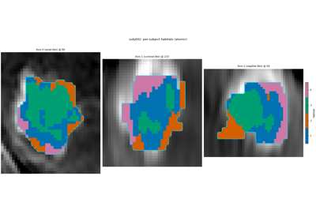
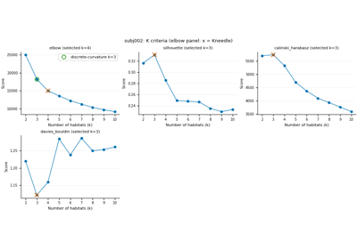
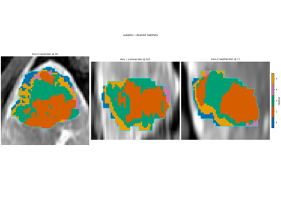
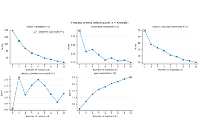
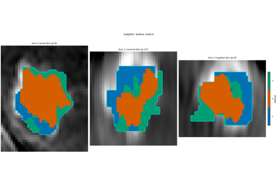
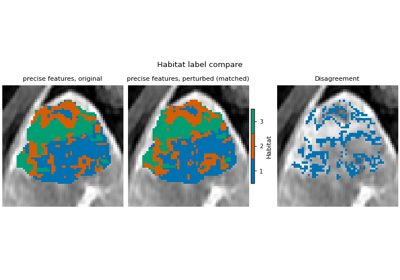

Examples#
Executed tutorials and how-tos for habitat analysis. Each page is a lesson: Background, Purpose, When to use, Key terms, then one step per cell.
Default science on pages that fit habitats: subject-level winsorize 1% then z-score (no cohort-level z-score or binning), modalities pre_contrast / LAP / PVP / delay_3min, ROI LAP, random_seed=0, and a serial RunPolicy with on_subject_failure=”continue”.
Introductory tutorials – first success
Building habitat maps – Spec and atomic
Features – voxel features
Clustering – supervoxels and habitats
Quantifying habitats – volume / MSI / ITH / graph / radiomics
Validation and reuse – train, match, precise, reuse
Manipulating images – load data
Advanced – stages, backends, export
Introductory tutorials#
Complete first-success lessons. Each page saves habitat maps and feature tables. Subject-level winsorize 1% + z-score; serial backend.
Two-step habitats
Habitats inside each subject
Habitats from pooled voxels

Building habitat maps#
Spec pages declare the analysis; atomic pages rebuild it from components and check voxel agreement. Then QC and cleaning.
Order: two-step Spec, two-step atomic, inside-each-subject Spec, inside-each-subject atomic, pooled Spec, pooled atomic, quality control, cleaning.


Habitats inside each subject from atomic components

Pooled-voxel habitats from atomic components

Cleaning habitat maps (connected components)
Features#
Multi-sequence intensities (default), texture maps on one sequence (all texture families), enhancement patterns, combining features, and a plugin extractor without editing HABIT source.
Texture feature maps, alone and with intensity
Clustering#
Supervoxel method and count, what a supervoxel summarizes, and the habitat clustering algorithm with selection metrics.


Clustering algorithm and number of habitats
Quantifying habitats#
Volume fractions, MSI, ITH, HABIT graph-network features, and habitat radiomics (each habitat + whole map).
Validation and reuse#
Train / save / predict, prototype-match habitat labels (same subject,
two subjects, or a one-step group), precise features under perturbation,
and reuse a published .habitatmodel.

Two subjects, same Spec: prototype matching


Precise features vs all textures under perturbation
Manipulating images#
Load a directory, NIfTI, SimpleITK, NumPy arrays, and named masks (user-supplied peritumoral mask).

Advanced#
Each analysis stage (extract through postprocess), backends (process,
resume, GPU cap, failure isolation), embedding HABIT in your pipeline,
and exporting results with describe_methods.